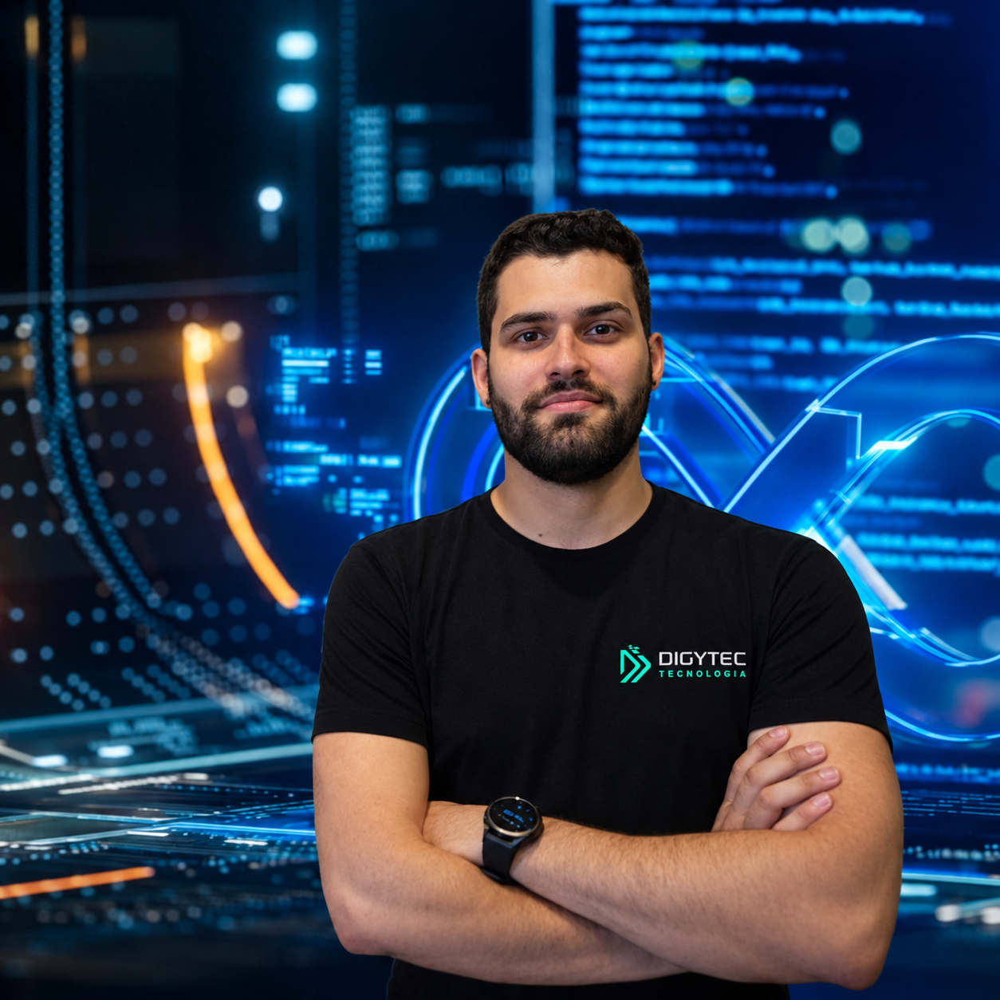
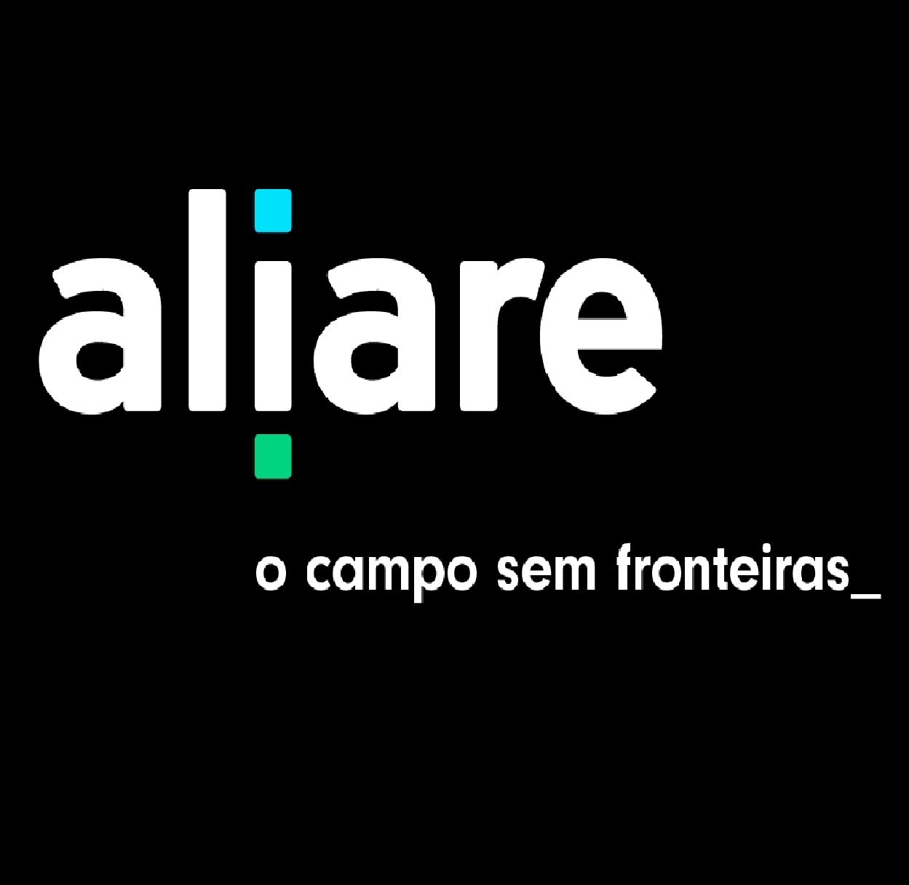
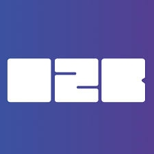
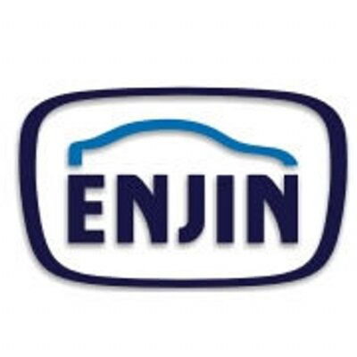
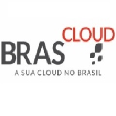
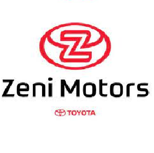
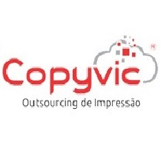

SRE & Observabilidade
Métricas, logs, alertas e processos que tornam incidentes menores e decisões mais rápidas.
GrafanaPrometheusZabbixLoki
Disponível para novos desafios
Confiabilidade · Automação · Cloud
Construo e opero plataformas confiáveis, transformando infraestrutura complexa em experiências simples para times e usuários.

Sou profissional de SRE/DevOps com experiência em ambientes cloud, virtualização, observabilidade e infraestrutura orientada à confiabilidade.
Atualmente atuo com clusters Linux, containers, pipelines CI/CD e monitoramento. Meu trabalho conecta pessoas, código e infraestrutura para entregar sistemas mais estáveis, seguros e eficientes.
Uma base técnica ampla, sempre guiada por confiabilidade e melhoria contínua.
Métricas, logs, alertas e processos que tornam incidentes menores e decisões mais rápidas.
Ambientes híbridos e multicloud pensados para crescer com segurança, visibilidade e controle.
Menos trabalho repetitivo e mais fluxo: pipelines, containers e infraestrutura como código.
Uma jornada que começou no suporte e evoluiu para a confiabilidade de plataformas.

Analista de Configuração / SRE
Gerenciamento de servidores em cluster, containers com Docker, observabilidade com Grafana, Loki, Promtail e Zabbix, bancos Oracle e PostgreSQL, Azure e automação com Shell e Jenkins.
Analista Cloud Junior
Atuação em ambientes cloud e on-premise, clusters Proxmox, servidores Linux, automação e observabilidade com Grafana, Zabbix, New Relic, Datadog e Dynatrace.

Analista Cloud Júnior
Instalação, configuração e monitoramento de servidores em AWS e GCP, com Zabbix, Grafana, Git, Docker, Kubernetes e Rancher.

Gerente de TI
Suporte técnico, infraestrutura de rede e servidores, manutenção de máquinas, sistemas internos e bancos de dados.

Administrativo de Sistemas I
Administração de sistemas, infraestrutura de rede, servidores, suporte a usuários e resolução de incidentes.

Assistente de TI
Suporte técnico, manutenção de estações, Linux, Windows, FTP, Apache e conceitos de redes.

Auxiliar Técnico
Diagnóstico, reparo e configuração de impressoras, copiadoras, redes e sistemas Windows e Linux.
Analista de Suporte
Suporte presencial, formatação, hardware, troca de peças e manutenção de impressoras.
Registros das empresas que fizeram parte dessa trajetória profissional.
Inglês
Se você está construindo uma plataforma, melhorando operações ou procurando alguém para cuidar da confiabilidade, vamos conversar.